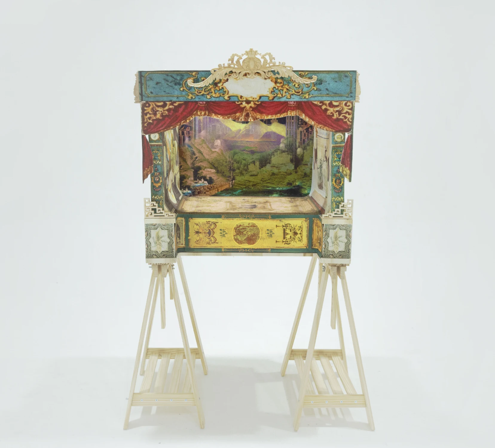
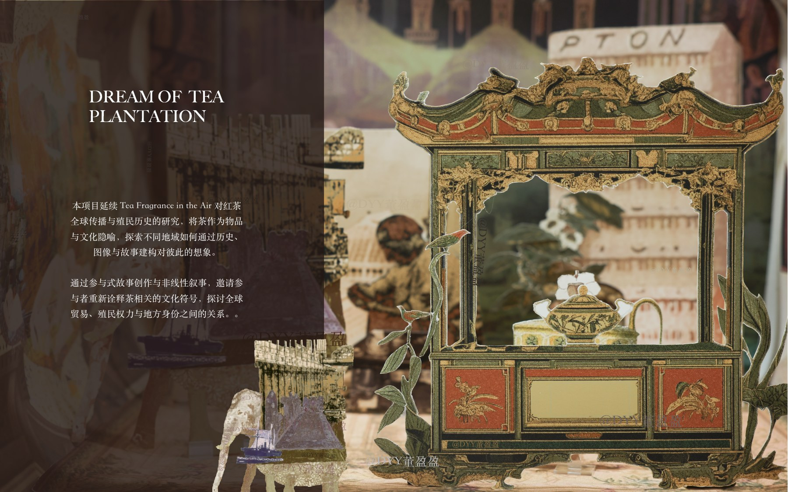
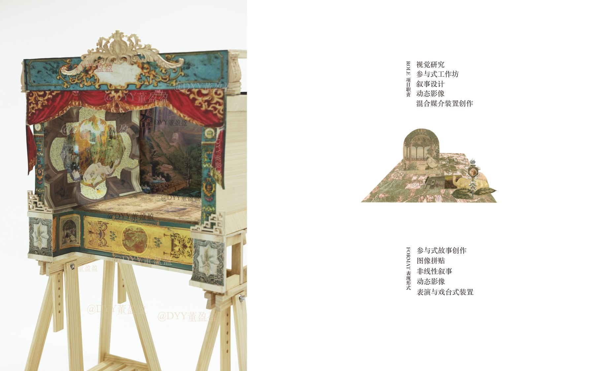
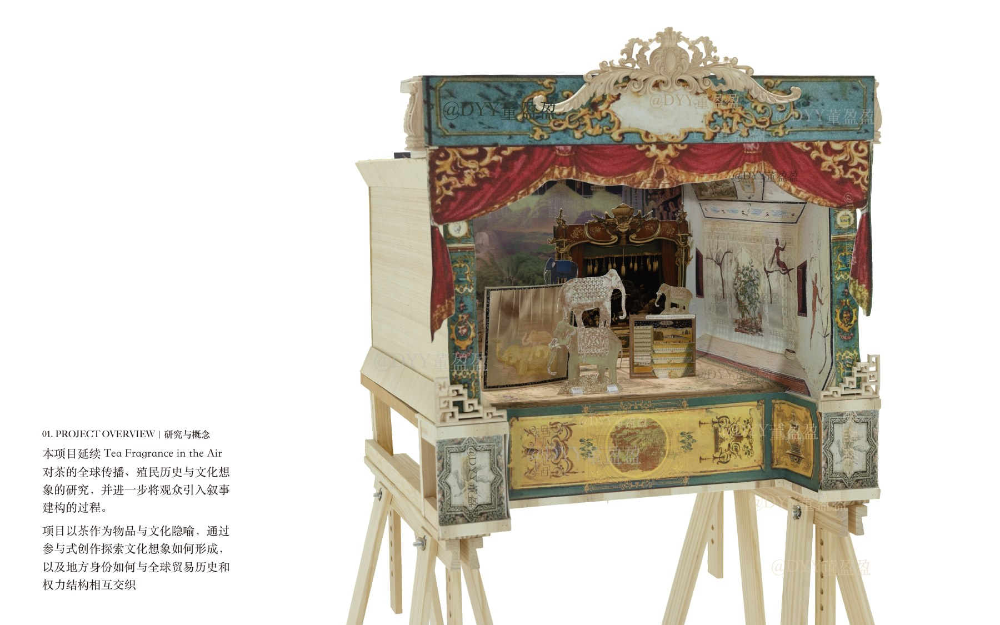
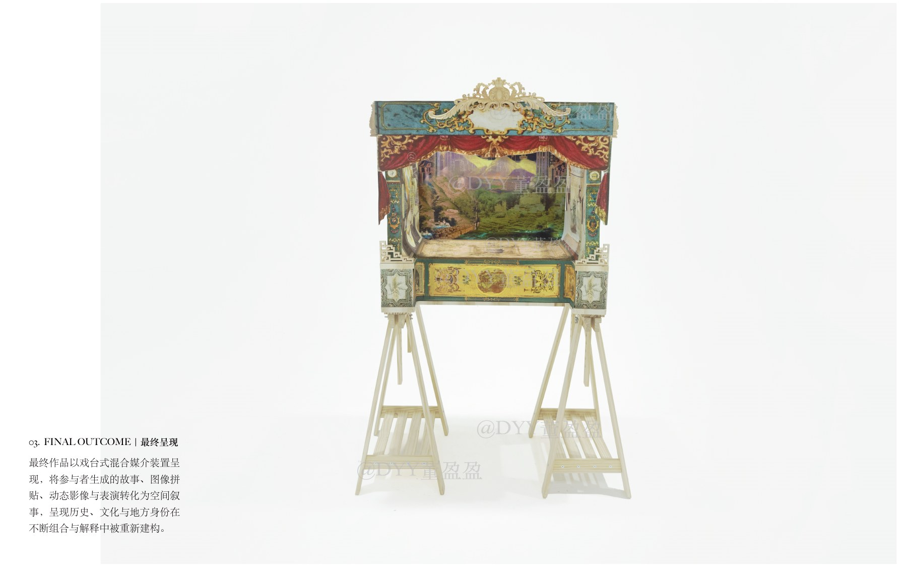
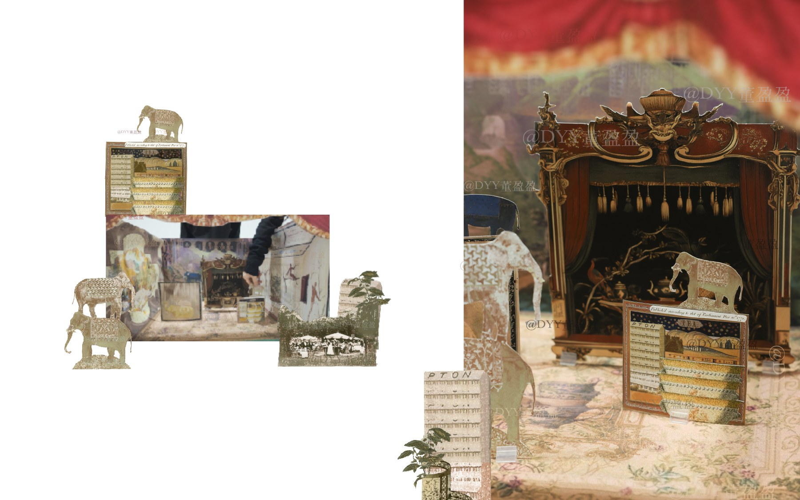
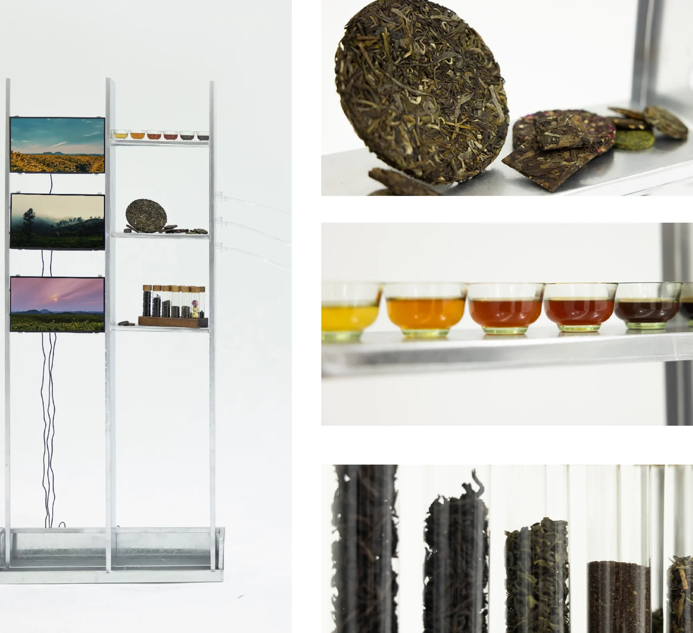
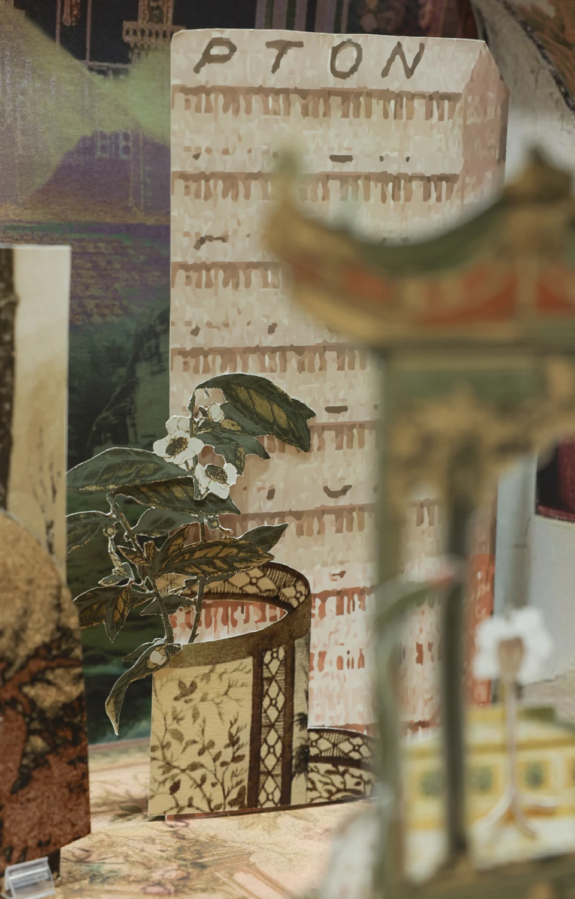
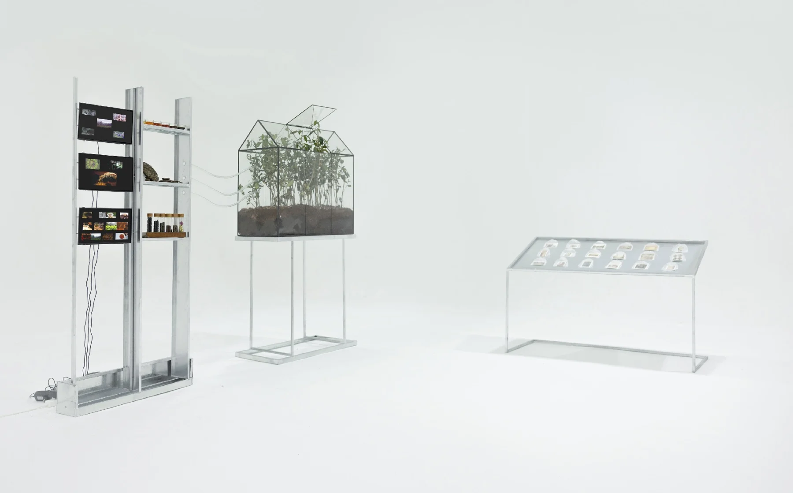
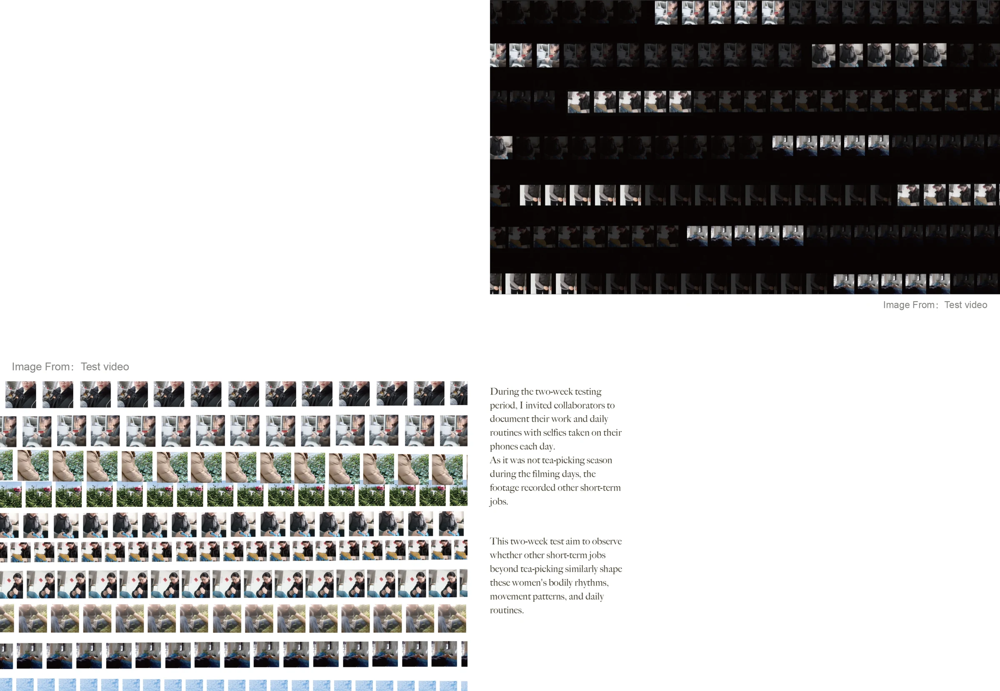

参与式表演与互动装置
Dream of Tea Plantation
同一组图像，可以演出多少种茶的故事。








参与式表演 / PARTICIPATORY PERFORMANCE
观众成为讲述者，在戏剧台前选择、排列并演绎图像。故事没有唯一的顺序，个人记忆与文化符号在共同参与中交织。





从图像到共同想象
《Dream of Tea Plantation》以可变的戏剧台为媒介，让历史档案、日常经验与集体表演并置。茶不只是被回忆的对象，也是一个不断被讲述、改写和分享的故事。
DREAM OF TEA PLANTATION · YINGYING DONG
PROJECT
个人项目
ROLE
图像研究、戏剧台装置设计、参与式表演组织
FORMAT
木偶戏剧台形式的装置、图像与互动表演
延续茶文化研究，借鉴木偶戏剧台构建互动装置，让参与者通过图像组合、故事编织与表演，共同生成非线性叙事。
01
研究起点
同一组茶文化符号，在不同人的地域经验与想象中会产生怎样的故事？项目从固定的图像阅读延伸到共同参与的叙事过程。
02
创作选择
借鉴木偶戏剧台的结构，把图像置入可被组合与演绎的表演空间。参与者通过图像阅读、故事编织与表演，使茶文化的不同解释在互动中出现。
03
最终呈现
木箱装置、图像材料与参与式表演共同构成作品。戏剧台承载故事的发生，文化想象则通过参与者的不同演绎持续变化。
点击加载视频 · 如无法播放，可使用上方链接
NEXT PROJECT